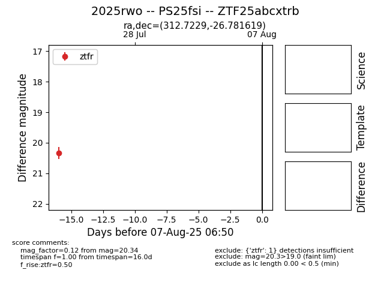

Target 2025rwo at 2025-08-11 12:45, see:
FINK: fink-portal.org/2025rwo
Lasair: lasair-ztf.lsst.ac.uk/objects/2025rwo
ALeRCE: alerce.online/object/2025rwo
TNS: wis-tns.org/object/2025rwo
YSE: ziggy.ucolick.org/yse/transient_detail/2025rwo
alt names
ZTF25abcxtrb (ztf,fink)
2025rwo (tns,yse)
PS25fsi (panstarrs)
coordinates:
equatorial (ra, dec) = (312.7229,-26.78162)
galactic (l, b) = (18.5633,-36.94733)
photometry
last ztfr=20.34
1 ztfr detections
